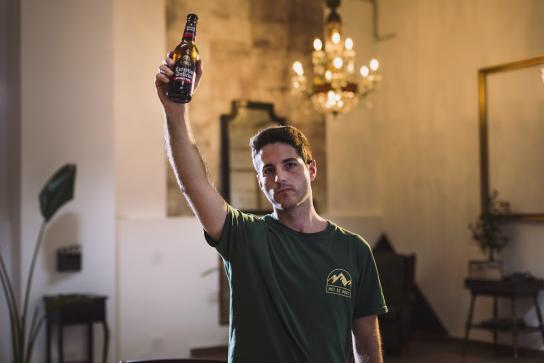
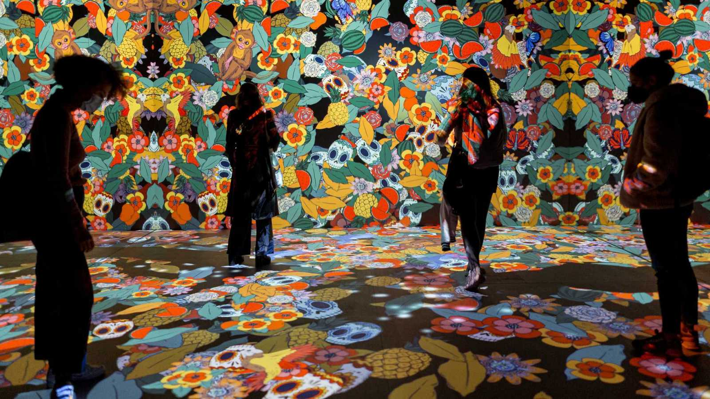
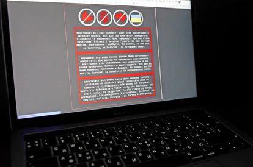

Carlos Blasco se formó como enfermero y trabaja en la UCI, pero nunca se dio por vencido con su verdadera vocación, el piano; su versión de 'Bella Ciao' se ha hecho viral, y gracias a Estrella Galicia ha conseguido su sueño: poner banda sonora a un anuncio de TV de 'La Casa de Papel'
Se multiplican las "experiencias sensoriales" en toda España, una tendencia que reina en Europa Klimt y Van Gogh son algunos de los autores más demandados que se muestran vía digital
Mozambique dijo el lunes que el portal que aloja los sitios web del gobierno fue atacado por un ciberataque que lo obligó a desconectar el sistema durante varias horas.
El mercado estadounidense de tokens no fungibles (NFT) OpenSea registró un ataque de 'phishing' el pasado fin de semana, que tuvo como resultado un robo valorado en casi dos millones de dólares en NFT en tan solo tres horas.
